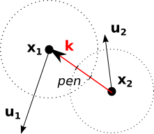
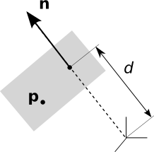
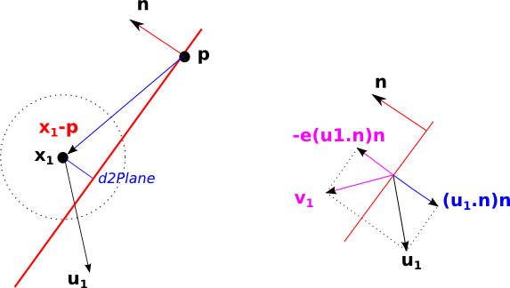
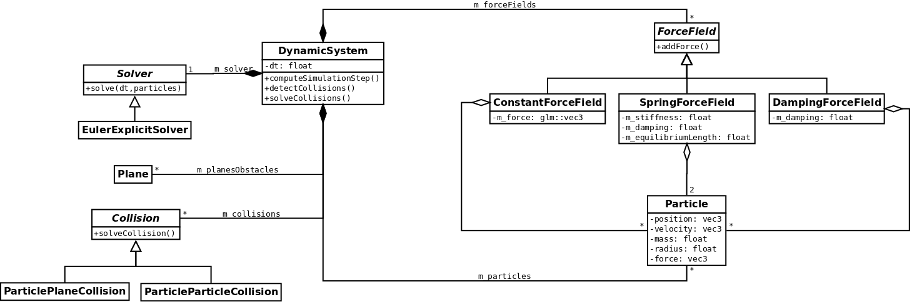

Practical 5 - Physics-based animation
The aim of this practical is to animate a scene using a simple physics-based system. It relies on particles only, which are updated via the application of forces (gravity, springs, ...). These particles can be rendered directly, or used as control positions by more complex objects.
1. Particle system
A particle is defined at time \(t\) by its position \(\vec{x}(t)\) and its velocity \(\vec{v}(t)\), as well as it mass \(m\).
1.1. Law of motion & system update
Following Newton's second law, each particle is accelerated via all the forces exerted on it, with the relation: \[ \displaystyle m \frac{d\vec{v}(t)}{dt} = \sum \vec{f(t)} \] In a discrete system, the state of a particle at time \(t+dt\) can then be computed out of its previous state and all the forces applied at time \(t\). This yields to a differential system, which must be solved using an integration scheme. In this practical, a simple explicit Euler scheme is used to successively compute the new velocity then the new position of each particle: \[ \displaystyle \left\lbrace\begin{array}{lcl} \displaystyle \vec{v}(t+dt) & = & \displaystyle \vec{v}(t) + \frac{1}{m} dt \sum \vec{f}\\ \\ \displaystyle \vec{x}(t+dt) & = & \displaystyle \vec{x}(t) + dt \vec{v}(t+dt) \end{array}\right. \]
1.2. Models of forces
Various forces will be applied in our system, especially gravity and global damping. Two particles could also be linked by a spring, which generates opposite forces on each of its extremities.
Gravity
On Earth, gravity \(g\) is uniform and exerts a force, called weight, proportional to the mass. For particle \(i\): $$\vec{f}_{G \rightarrow i} = m_i \vec{g}$$
Damped spring
Springs are used to simulate an elastic behavior that tends to bring two particles back to a given distance from each other, the equilibrium length.
An ideal spring between particles \(i\) and \(j\) is parametrized by its equilibrium length \(l_0\) and its stiffness \(k\). The force exerted on particle \(i\) is then:
$$
\vec{f^k}_{j \rightarrow i} = -k \left(\left\Vert \vec{x_i}-\vec{x_j} \right\Vert -l_0 \right)
\dfrac{\vec{x_i}-\vec{x_j}}{\left\Vert \vec{x_i}-\vec{x_j} \right\Vert}
$$
Ideal springs quickly yields to unstable simulation. To prevent this, damping a spring is used to reduce the relative motion between two particles.
The action of a damper is proportional to the viscous damping coefficient \(k_c\) and the relative velocity
(difference of velocities of the two particles projected on the spring direction):
$$
\vec{f^{k_c}}_{j \rightarrow i} =
-k_c\left(\left(\vec{v_i} - \vec{v_j}\right)
\cdot \dfrac{\vec{x_i}-\vec{x_j}} {\left\Vert \vec{x_i}-\vec{x_j} \right\Vert}
\right)
\dfrac{\vec{x_i}-\vec{x_j}} {\left\Vert \vec{x_i}-\vec{x_j} \right\Vert}
$$
The total action of a damped spring is computed by summing the different contributions of an ideal spring and a damper :
$$
\vec{f}_{j\rightarrow i} = \vec{f^k}_{j\rightarrow i} + \vec{f^{k_c}}_{j \rightarrow i}
$$
From Newton's third law, the force generated at the other extremity of the spring is simply the opposite :
$$
\vec{f}_{i\rightarrow j} = - \vec{f}_{j\rightarrow i}
$$
Global damping: viscosity of the medium
The movements of all bodies moving within a medium are damped according to its global viscosity. This is mostly relevant in fluids of windy environments. This phenomenum can be modeled by an action proportional to the medium viscosity coefficient \(c\) exerted on the opposite direction of the velocity: $$ \vec{f}_{C\rightarrow i} = -c \vec{v_i}(t) $$ In animation, global damping can also be used to simply slow the system down thus increasing its numerical stability.
1.3. Collisions
Two kind of collisions are handled in our dynamic system: between a particle and a (fixed) plane, and between two particles. In all cases, two steps are required:
-
Collision detection. Usually, a broad phase first detects (in an efficient way) if two objects could intersect. In that case, a narrow phase actually computes wether the two objects are really inter-penetrating or not.
Since we only deal with few and very simple objects, the broad phase won't be implemented in this practical. - Response to collision. In our case, the position and velocity of each particle will be modifed to correct the penetration. Part of the energy could be absorbed during the impact, which would slow the particles.
Let's consider two particles \(p_{1}\) and \(p_{2}\) with a position \( \left\lbrace \vec{x_{i}} \right\rbrace_{i=1,2} \), a velocity pre-collision \( \left\lbrace \vec{u_{i}} \right\rbrace_{i=1,2}\), a velocity post-collision \( \left\lbrace \vec{v_{i}} \right\rbrace_{i=1,2}\), a mass \( \left\lbrace m_{i} \right\rbrace_{i=1,2}\) and a radius \( \left\lbrace r_{i} \right\rbrace_{i=1,2} \).
1.3.1. Collision between two particles
-
Detection: two particles intersect each other if the distance between their center is less than the sum of their radius:
$$
\left\Vert \vec{x_1} - \vec{x_2} \right\Vert \leq r_1 + r_2
$$
In that case, let's set \(\vec{k}\) the vector between both centers \[ \displaystyle \vec{k} = \frac{\vec{x_1} - \vec{x_2}} {\left\Vert \vec{x_1} - \vec{x_2} \right\Vert} \] and \(\mathit{pen}\) the interpenetration distance along \(\vec{k}\) \[ \displaystyle \mathit{pen} = r_1 + r_2 - \left\Vert \vec{x_1} - \vec{x_2} \right\Vert \]  - Correction of the positions: each particle is moved along \(\vec{k}\), to be in contact but without interpenetration. Both particles move half of the interpenetration distance, with a ponderation if their masses differ (the heavier moves less). If one of the particle is fixed, only the other is displaced. \[ \left\lbrace \begin{array}{c} \vec{x_{1}} & \leftarrow & \vec{x_{1}} + \left(\frac{m_2}{m_1+m_2} \mathit{pen}\right) \vec{k} \\ \vec{x_{2}} & \leftarrow & \vec{x_{2}} - \left(\frac{m_1}{m_1+m_2} \mathit{pen}\right) \vec{k} \end{array} \right. \]
-
Correction of the velocities :
\[
\left\lbrace
\begin{array}{c}
\vec{v_{1}} & = & \vec{u_{1}} - \frac{a}{m_{1}}\vec{k} \\
\vec{v_{2}} & = & \vec{u_{2}} + \frac{a}{m_{2}}\vec{k}
\end{array}
\right.
\]
with
\[
a = \frac{(1+e)\vec{k} \cdot \left( \vec{u_{1}} - \vec{u_{2}} \right)}{\displaystyle \left( \frac{1}{m_{1}} + \frac{1}{m_{2}} \right)}
\]
\(e\) is the restitution coefficient, which ranges from 0.0 (full absorption of the energy by the impact) to 1.0 (full elastic response).
The new velocities of the particles are computed so that the linear momentum and kinetic energy are conserved (in the elastic case).
- Conservation of linear momentum: \[ \displaystyle m_{1}\vec{u_{1}} + m_{2}\vec{u_{2}} = m_{1}\vec{v_{1}} + m_{2}\vec{v_{2}} \]
- Conservation of kinetic energy: \[ \displaystyle \frac{1}{2}m_{1} \vec{u_{1}} \cdot \vec{u_{1}} + \frac{1}{2}m_{2} \vec{u_{2}} \cdot \vec{u_{2}} = \frac{1}{2}m_{1} \vec{v_{1}} \cdot \vec{v_{1}} + \frac{1}{2}m_{2} \vec{v_{2}} \cdot \vec{v_{2}} \]
1.3.2. Collision between a particle and a plane
|
A plane \(\pi\) (supposed infinite and fixed) is defined by the equation: \[ \begin{array}{lr} ax + by + cz + d = 0 & \Leftrightarrow & \vec{n} \cdot \vec{p} = d & (\pi) \end{array} \] where \(\vec{n}=(a,b,c)\) is the normal of the plane (normalized), \(\vec{p}=(x,y,z)\) is a point of the plane and \(d\) is the distance from the plane to the origin. The distance between a point \(\vec{q}\) and the plane is given by \[ \left|\left(\vec{q} - \vec{p} \right) \cdot \vec{n}\right| \] |
 |
- Detection:
there is penetration if the distance between the particle center and the plane is less than the radius of the particle: \[ \left|\left(\vec{x_1} - \vec{p} \right) \cdot \vec{n}\right| \leq r_1 \] Let's call this distance \(\mathit{d2Plane}\)  - Correction of the position: the particle is projected as if the plane fully absorbed the impact, along the plane normal \[ \begin{array}{c} \vec{x_1} & \leftarrow & \vec{x_1} - \left(\mathit{d2plane} - r_1 \right) \cdot \vec{n} \end{array} \]
-
Correction of the velocity:
\[
\begin{array}{c}
\vec{v_1} & = & \vec{u_1} - \left(1 + e\right) \left(\vec{u_1} . \vec{n}\right) \vec{n}
\end{array}
\]
The plane case is actually similar to the particle/particle collision. Just consider that the the plane is particle 2, with a null velocity (fixed) and an infinite mass. Vector \(\vec{k}\) is the colinear with the plane normal.
2. Reminder: How to compile from scratch
#Switch to a C++11 compiler (at ENSIMAG only)
source gcc493.sh
#Compile external libraries (if new lib has been added)
cd extlib/
make clean_all
make
#Compile project
cd ../
rm -rf build/
mkdir build/
cd build/
cmake ..
make -j 8
3. Additional files
- Download the source of the practical here .
- Unzip it.
- Copy the extlib directory from you previous practical in this new directory called practical5.
Alternatively, you can simply create a symbolic link to the existing libraries.
For example: cd practical5 then ln -s ../practical1/extlib - Compile your project by following the previous instructions.
4. About the provided code
The provided code enables to model a system composed of particles linked together with damped springs, within a medium with gravity and viscosity. Particles are represented by small spheres, with a radius and a mass. Collisions are handled to ensure non-penetration between particles and infinite planes, and between pairs of particles.
All classes are gathered in a dynamics subdirectory. The first group of class is the core of the dynamics system:
-
The main class is
DynamicSystem, which gather all components and run the system resolution over time; -
Particlerepresent a single particle, with its own properties (position, velocity, mass, radius) and the forces applied to it; -
Forces are modeled in the
ForceFieldhierarchy, specialized with classesConstantForceField(e.g. for gravity),SpringForceFieldorDampingForceField(e.g. for the viscosity of the medium); -
Collisions between objets are detected and solved in the
Collisionhierarchy, specialized by theParticlePlaneCollisionandParticleParticleCollisionclasses; -
Finally the integration scheme is delegated to a solver, with a single implementation in
EulerExplicitSolver. - This physics code is incomplete, and you will need to write part of it.

The second group of class are Renderable objects used for vizualisation:
-
DynamicSystemRenderablehandles the animation loop and control keys, but do not draw anything. Dynamics renderables should be added as children of the DynamicSystemRenderable; -
All particles can be rendered using a single
ParticleListRenderableobject; -
Each plane is rendered using a
QuadRenderableinstance; - Finally, each force field (springs, constants, damping) can be displayed using its associated renderable class.
Exercise 1: simple particles
All scenes of these exercises are built in practical_05_scene.cpp. Let's start with the practical05_particles function.
- Study how the dynamics system is created, containing two particles and the gravity force field.
-
To understand how the dynamic system works, start with the function
computeSimulationStep(). This is the heart of the system.
Now compile and run the animation. Deduce from the function computeSimulationStep() why the particles stay put. -
You must first complete the integration scheme in
EulerExplicitSolver::do_solve(...)to update the velocity and position of each particle. Now, the particles should fall down as expected.Several keys are available to control the dynamic system animation (the code is in
DynamicSystemRenderable::do_keyPressedEvent(sf::Event &e)):- F4: play/pause the animation
- F5: reset the animation
- t: "tilt" all particles, a brutal way to randomly animate the system...
Exercise 2: it's spring time
In the initialize_practical_05_scene function, load the scene defined in practical05_springs.
- Look at the created system, a 2D net of particles linked with springs. Border particles are fixed.
-
Complete the
SpringForceField::do_addForce()method to implement a damped spring. Forces must be computed then added to the particles at each extremity. - Run the simulation: the system should dangle... Does it stop? How can you explain this?
-
In this practical, a global damping is added to dissipate the velocity of all particles in a medium viscosity (like air friction).
Tune the
dampingCoefficientvalue of the global damping and thedampingvalue of the springs to get a realistic simulation (a balance must be found between stable and too slow...)
Exercise 3: collisions
Load the scene practical05_collisions, containing
several particules and a plane. They will collide each other... once your done with this exercise.
- Run the animation a first time: nothing is treated...
-
Do it again after activating the collisions detection in the scene creation using
DynamicSystem::setCollisionDetection(true).
So far, only collisions between particles are implemented. Study the code inParticleParticleCollision::do_solveCollision(), corresponding to the collisions theory. -
Vary the restitution coefficient of the dynamics system between 0.0 and 1.0 to observe its effect.
Set it to 1.0 and let the simulation run at least 30 seconds: what happens? How could you explain it? -
Based on the above theory and the previous particle/particle case, complete the
ParticlePlaneCollisionclass to detect the collision and solve the contact. - Initialize the horizontal velocity of the particles with a non null value. Run the animation and check the system behaves as expected (be logical).
Collisions are resolved by pair, between particles and planes then among particles. When many collisions occurs, is there any guarantee they won't be any inter-penetration at the end of the iteration? No! Any idea why?
(nb: this is a very difficult problem to resolve!)
This may be observed by adding one or more planes to the scene, and increasing the number of particles (in our case however, the double loop is quite efficient...).
Exercise 4: let's play pool... before working on your project!
-
In this last exercise, load the scene
practicle05_playPool: two particles are set on an horizontal plane, and bounded by four vertical planes. The first particle can be moved (accelerated) interactively with the arrows keys. Lets' play! -
Carefully study the scene creation as well as the
ControlledForceFieldRenderableclass. - You now have many animation examples using a dynamic system. Let's go back to your project to animate your own kart or any other elements.